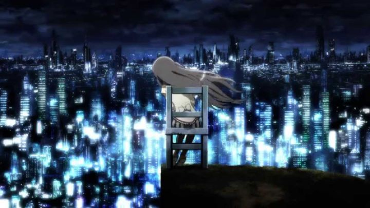

Madoka Magica was one of the most important anime series of its year, and arguably the most important of its decade. A deconstruction that made everyone rethink their attitudes towards the cutesy magical-girl anime genre, it was a simple but powerful story. And it ended perfectly well: but its success encouraged two compilation films, and a third that continues the story further in "Madoka Magica The Movie 3 - Rebellion." There was no reason to change the ending, but they did. And under the circumstances, they did a fantastic job.The beginning of the film would be confusing if you hadn't seen the original show (or two previous movies). Admittedly slow to start, It looks like an idealized life of the first half of the original show, where Madoka, Homura, and all the other girls fight together as a team against Nightmares, dark dangerous creatures made from human emotions out of control. No one gets hurt, and all is well. But anyone who knows the original story knows this isn't at all like it's supposed to be, and there are contradictions to what we thought we knew in this perfect life. Homura catches on, and starts questioning everything and her friends, leading to the possibility that it isn't real, and the question of whether or not they would want to leave this perfect world. Saying much more would spoil the story. But I do need to mention the ending: it looks like everything will end nicely, with everyone at peace and the world in balance, a nice little epilogue to how the show ended. But then there's a huge twist that takes up the last half hour, based around Homura's emotions and memories to Madoka and her reasons for fighting for so long to save her from her fate. Interviews with the writer show that the creators were dissatisfied with the nice ending of the original show, thus leading to this. It feels jarring, and surprising, and this film has been met with controversy and polarized many fans. It also gave the film purpose. With the "nice" ending, absolutely nothing would have changed from the original ending of the show, and the two hour film would be an epilogue, not a continuation, feeling like a 20-page excerpt to a 300-page book that was stretched to be longer than it needed to be. This true ending makes big changes, not only allowing the potential for further sequels, but feeling more complete in this dark universe in its own, strange way. I personally loved it. Whether or not you do, you'll have fun just seeing where the original creators take the story trying to extend it forever further.Not being able to rely on scenes from the show, the movie is animated entirely for the big screen, and shines on Bluray. Incredible detail in the backgrounds, fantastic action scenes, and plenty of disturbing faces and "witch" patterns that the show was known for. The Japanese voice acting is as good, given that they are still voicing young girls without much emotion. The English dub is fine, although the Japanese feels more appropriate. The music is as good as ever, although predictable in style after milking the show for so long. Yes, the creators are milking the show's success. But they did it expertly, and this is a important movie to the canon, a must see for fans. Hopefully they won't keep going and end this on a high note. Or in this case, a side note.
- "Ani" More reviews can be found at : https://2danicritic.github.io/ Previous review: review_Madoka_Magica_The_Movie_1_&_2_-_Beginnings,_Eternal Next review: review_Maquia_-_When_the_Promised_Flower_Blooms